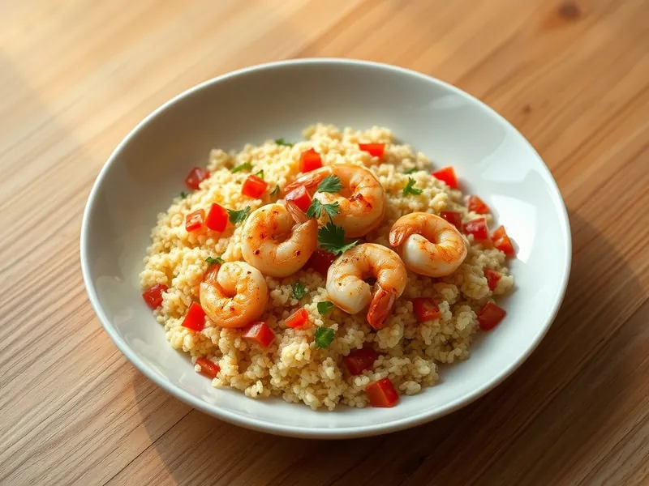

Кускус с креветками и чесноком
Кускус с креветками, обжаренными в чесночном масле, помидорами и лимоном
20 мин3 порц.542 ккал на порциюБ 36 · Ж 17 · У 60Средиземноморская кухня
Открыть в приложении: порции, таймеры, список покупок
Продукты на 3 порц.
- Кускус1 стак.
- Вода1,5 стак.
- Креветки400 г
- Помидоры2 шт
- Чеснок3 зуб.
- Оливковое масло2,5 ст. л.
- Лимон0,5 шт
- Острый перец молотый2 щеп.
- Соль1 ч. л.
- Петрушка0,5 пучка
Как готовить
- Залейте кускус кипятком с щепоткой соли и 1 ст. л. масла, накройте и оставьте на 5 минут.
- Креветки разморозьте и очистите, если они в панцире. Помидоры нарежьте кубиками, чеснок и петрушку мелко.
- Разогрейте оставшееся масло на среднем огне, обжарьте чеснок и острый перец 30 секунд, не давая чесноку потемнеть.
- Прибавьте огонь до сильного, выложите креветки и жарьте 2-3 минуты, пока они не станут розовыми и не свернутся. Посолите.
- Добавьте помидоры на 1 минуту, затем разрыхлённый кускус, сок лимона и петрушку. Перемешайте и сразу снимите с огня.
Совет. Не передерживайте креветки на огне: как только они порозовели, они готовы, а через минуту станут резиновыми.